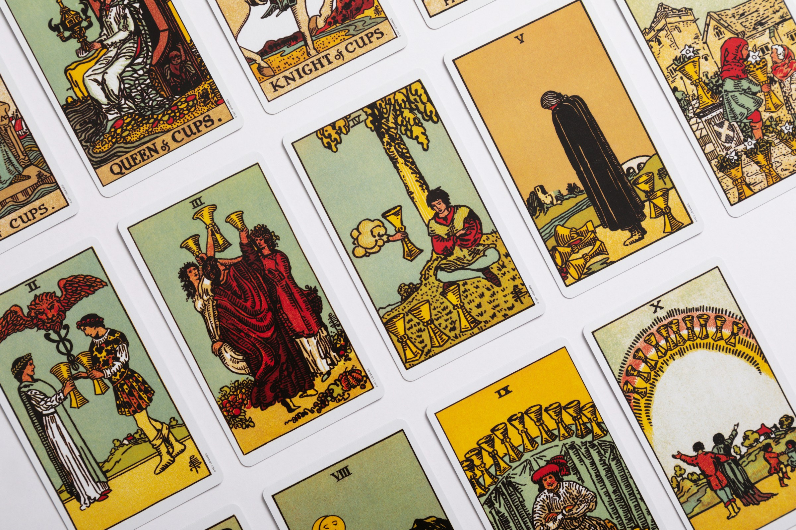

O que é o Tarot?
O Tarot é um sistema de 78 cartas utilizado há séculos, com simbolismos e arquétipos que representam diferentes aspectos da experiência humana. O baralho divide-se em Arcanos Maiores (22 cartas — grandes temas da vida) e Arcanos Menores (56 cartas em quatro naipes: Paus, Copas, Espadas e Ouros).
Para que serve e como usar?
Funciona como ferramenta de autoconhecimento, tomada de decisão e reflexão. A leitura não é verdade absoluta, mas interpretação: ao embaralhar as cartas mentalizando uma questão, a carta que surge oferece um conselho para guiar suas ações.
